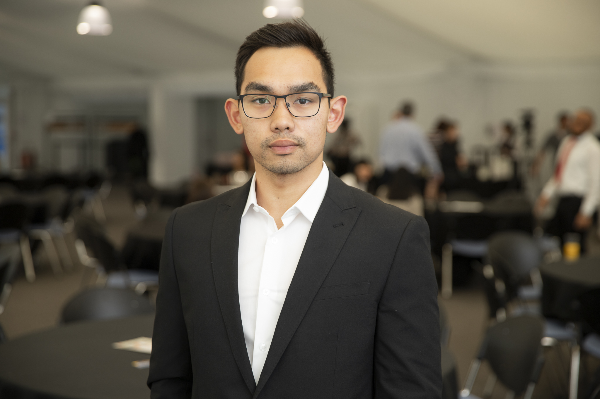

Business Analyst
An IT Business Analyst with a strong foundation as an engineer who has transitioned into the IT Sector
I am actively pursuing a new career path that offers continuous development and challenges me as a person.
I am working towards certifications with the IIBA and hope to develop my foundational skills to excel and apply best practises into my work
Career History
Sunseeker International, Poole - Graduate IT Business Analyst
- Elicit requirements from stakeholders to produce a business process map and the initiation document
- Develop detailed documentation for Auditors and Business Process Owners.
- Aid Users during UAT to ensure detailed documentation for accurate feedback.
Cosmetic Warriors Ltd (LUSH), Poole - Graduate Manufacturing Engineer
- Produce ideas towards continuous improvement through analysis of process maps.
- Ensure that the correct procedures have been implemented and utilised when Purchasing machinery as well as consulting with the stakeholder for the next steps.
- Published Standards, Processes and procedures to enhance communication as well as consistency of production.
- Constructed Technical Files for modified machinery.
- Developed 3D Technical drawings for various equipment for manufacture.
- Networking with clients and partners to form strong business relationships
- Undertook the on-boarding of new equipment, as well as delivering training for product leaders.
- Refine new machinery in preparation for the manufacturing floor.
ECS Special Projects, Broadmayne - Design Engineer
- Reverse Engineer specific components for visuals or historically finding faults within a design.
- Using new technology to explore and further enhance the capabilities of the company.
- Research and development regarding anti ordnance devices and other military devices that can be further developed.
LUSH Manufacturing Ltd, Poole - Production Assistant
- Gathered the components in an efficient manner for streamline delivery to the retail shops.
- Performed inventory checks and organised the warehouse to optimise flow of the inventory moving into the shop floor.
- Safely transporting fragile stock and handling incoming delivery.
- Maintained a clean and safe workspace
- Fulfilling unique requests from customers ordering digitally.
- Managed Stock rotation to ensure quality and customer satisfaction.
Education
Plymouth University , Plymouth - BSc Mechanical Design and Manufacture
Brockenhurst College, Brockenhurst - Engineering Level 3 Extended Diploma
St Peters Catholic School, Southborne - GCSEs
References